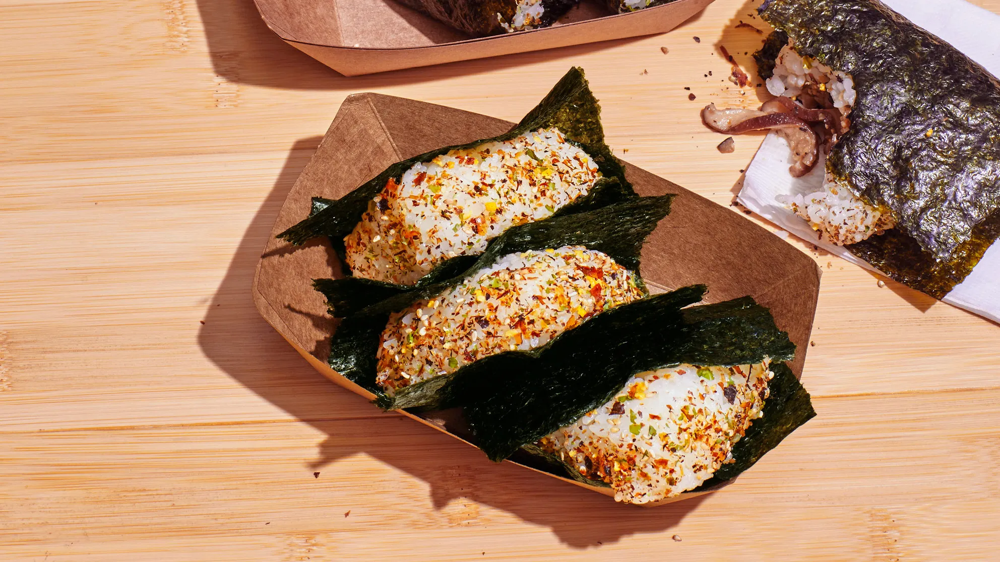

Sushi

Description
Sushi, a Japanese culinary art, combines vinegared rice with various ingredients such as raw fish, vegetables, and
seaweed. Common forms include nigiri (a small rice mound topped with fish) and maki (rolled in seaweed with fillings).
The flavor profile is subtle yet complex, often enhanced with soy sauce, wasabi, and pickled ginger, emphasizing
freshness and delicate presentation.
Ingredients
- Sushi rice
- Rice vinegar
- Nori sheets (seaweed)
- Fresh cucumber (cut into thin strips)
- Ripe avocado (sliced)
- Imitation crab or cooked crab meat
- Soy sauce (for dipping)
- Pickled ginger (for serving)
- Wasabi (optional)
Steps
- Prepare the sushi rice: Rinse rice until water runs clear, then cook according to package instructions. Mix cooked rice
with rice vinegar while it's warm, then let it cool.
- Prep the fillings: Slice cucumber and avocado into thin strips.
- Roll the sushi: Place a nori sheet on a bamboo sushi mat. Spread a thin layer of rice over the nori, pressing gently.
Flip it over so the rice side is facing down.
- Add fillings: Place cucumber, avocado, and crab along one edge of the nori.
- Roll tightly: Using the mat, roll the sushi from the edge with fillings, pressing firmly to form a tight roll.
- Slice and serve: Cut the roll into bite-sized pieces with a sharp, wet knife. Serve with soy sauce, wasabi, and pickled
ginger.